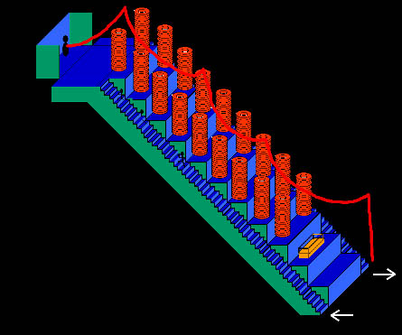
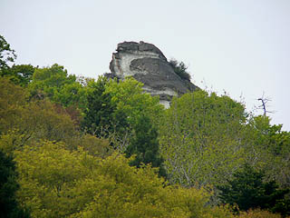

迦葉山弥勒寺〜大開帳編〜/群馬県沼田市
迦葉山弥勒寺の大開帳に行って来た。
以前、弥勒寺の項で紹介したが、中峯堂という山の斜面に連なった建物の中にある大階段を登る事ができるのだ。
まずはその辺の説明から。
巨大な天狗の面がある拝殿の奥に中峰堂という建物がある。
これは山の斜面に建てられた連続した建築群で、拝殿から一番奥の中峯尊が祀られているお堂までがズーっと吹き抜けになっているのだ。
しかも外から見ると拝殿が後ろの中峯堂を隠していて、知らないで拝殿に入ると、何でこんなに奥行きがあるんだ？と思う事請け合い。
その不思議さは筆舌に尽くし難し。何ともマジカルでトリッキーでスぺーシーな空間なのだ。


その大階段の公開が十年に一度。
今年、待ちに待った大開帳がついにやって来たのである。
弥勒寺に着くと大勢の人が訪れている。このようなポスターも貼られていて、やる気満々。
ちなみに沼田の市街地などにも大きな看板が出ていて、予想以上に賑わっていた。
天狗人気侮るなかれ。何せ十年に一度ですから。
まずは巨大な天狗のお面に御挨拶。相変わらず大きい。
いよいよ大階段との御対面である。階段に至るにはまず外陣に上がらなければならない。
拝殿の外にポツンと小机があり、若いお坊さんが座っている。どうやらそこが大開帳の受付のようだ（上左画像中の「大開帳厳修」と書かれた看板の後ろです）。で、お坊さんに入場料（？）を払い拝殿の左側にある外通路を通って中に入る。
おおお、やっておりまする。外陣にはすでに数十人の参拝者が座ってじっと僧侶の読経に耳を傾けていた。
しかし、皆、耳を傾けつつも視線は垂幕の向こうにある大階段に。
そうこうしている内に読経は終わり、いよいよお待ちかねの大開帳、階段登りである。
大開帳を前に、寺の方が幾つか説明をする。
それによると、まず大階段は左右54段づつ、合わせて108段あるという。奇しくも人間の煩悩の数と同じこの階段。
一段づつ歩を進めれば煩悩が減っていくとでも言うのだろうか。こんな煩悩パンパンの俺様に。
大体、今すでに頭の中は「階段早く登りて〜」欲で一杯ですもん。
なお、階段を登り切ったところには天狗様が祀られており、その天狗様の手から伸びている紅白の紐が皆様の目の前に垂れ下がっているこの紐なのです・・・みれば先程、僧侶達が読経していた手前に紅白の紐がぶら下がっている。
ほっほ〜、これはこれは。別に今から本体に面会に行くのだから意味はないのだが、とりあえず触っておく。
で、いよいいよ大階段である。善男善女のみなさんがゾロゾロと左手の階段から登っていく。
ちなみに赤い幕から先は撮影禁止という事なので、幕の手前から差し障りのないアングルで撮ってみました。
階段は中央にある雛壇の左右に取り付いている。
まず圧倒されるのは薄暗い大空間に天井からぶら下がった巨大な提灯。これが上までず〜っと連なっていて幻想的な雰囲気を醸し出している。
下から見ていると、奥が暗くて良く見えないので、どこまで続くのか判らない。片道54段とは思えない壮大なスケール感を演出している。
下の略図を見て想像力をパンパンに膨らませていただきたい。
階段を登り切ると正面には天狗の像があり、そこから先程触った紐が伸びていた。この天狗さんが中峯尊というのだそうな。
上から下を見下ろすと、闇の中に浮かんだ長提灯の間を紅白の紐が遥か下まで伸びている。
ここは階段だけで出来ている、ある意味単純な構成の空間なのだが、薄暗い中に浮かぶ提灯や大空間を縦断する紅白の紐といったエレメントによってダイナミックな空間に変容していると考えられる。
さらに十年に一度、開帳するという演出も、より宗教的な神秘性を高めている。上手いぞ。

大勢の人が数珠つなぎに階段を登っているので若干渋滞状態。何せ年配の方が多いですから。
私の後ろにいた御婦人は十年前の大開帳にも来たという。
実はこの中峯堂、10年前の平成7年に全面改装したのだそうだ。
つまり、新しくなってから2回目の大開帳、ということになる。
それ以前の中峯堂はどんな姿だったのか、やっぱり大階段はあったのか、大開帳をやっていたのだろうか。
・・・御存じの方、御一報下さい。
そんなこんなで階段を下り最初の外陣に戻る。暗い階段を下りて来たのでホッとする。まるで戒壇巡りのようだ。
階段を下りたところで記念品（天狗イラスト入りのカッコいいステッカー）をもらい、外へ出た。
これにて中峯尊大開帳厳修は終了である。次回は2015年。今回お見逃しの方は十年後、お忘れなきよう。
さて。
天狗さんとの御縁結びをバッチリ済ませ、そのモチベーションたるや蒼天を突くがごとし。その勢いで奥の院の和尚台に向かった。
ここはこの寺を曹洞宗に改宗したという天巽の修業場だったといわれる場所で、寺から歩いて40分程だろうか。背後の山中に突然ボコっと隆起した岩山だ。
前回訪問時には行けなかったので、今回は是非チャレンジしよう、という訳だ。
和尚台に向かう道中からポツポツと雨が落ちて来た。で、和尚台に着いた頃にはかなり激しい雨になってしまった。
とりあえず和尚台直下の懸造のお堂で休憩してからこの岩山を目指す。
巨大な岩山は真っ二つに割れていて、その割れ目に鎖が垂らしてある。
その鎖を唯一の命綱として登っていくのである。
岩の割れ目の遥か上方には板が渡してあるのがお解りいただけるだろうか。
そこから先に行くと和尚台の天辺へと至るのだそうだ。
中峯尊大開帳昇殿により天狗界とのぶっといパイプを築いたこのオレ様である。こんなところはチョチョイのチョイなのである。
とりあえず、私よりも身が軽いと思われる愚息に先遣隊を任せる。
・・・数分後、愚息が途中で諦めて帰って来たので今度は私がチャレンジ。
・・・スミマセン。天狗と固めの盃を交わした（違いましたっけ？）私ですら無理でした。雨も激しくなり生命の危機を感じたので、あっさりギブアップ。
和尚台の上では天狗が「このヘタレがっ！」と大笑いしていた事であろう。だって恐いんだもん。カメラぶつけちゃったし。
それにしても修験道の行者さんなどはこんな感じのハードな場所を登って修業してるのだろうか？
行者さんといえば勿論年配の方もいらっしゃるだろう。
もしかして、登れなかったら「今日からお前は行者ではない！」とか言われて事務方に回されたりしちゃうんでしょうか？
恐るべし修験道の世界。

下山途中、増々激しくなる雨の中、改めて和尚台を見上げる。
・・・あんなトコ絶対登れねえ〜！
2005.５.
珍寺大道場 HOME